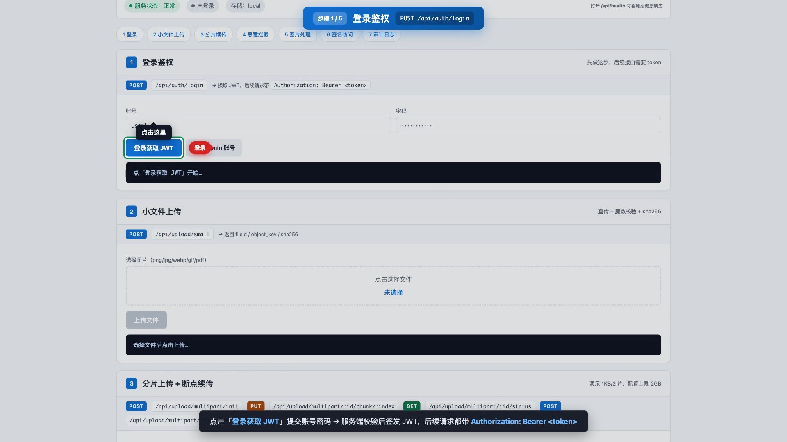
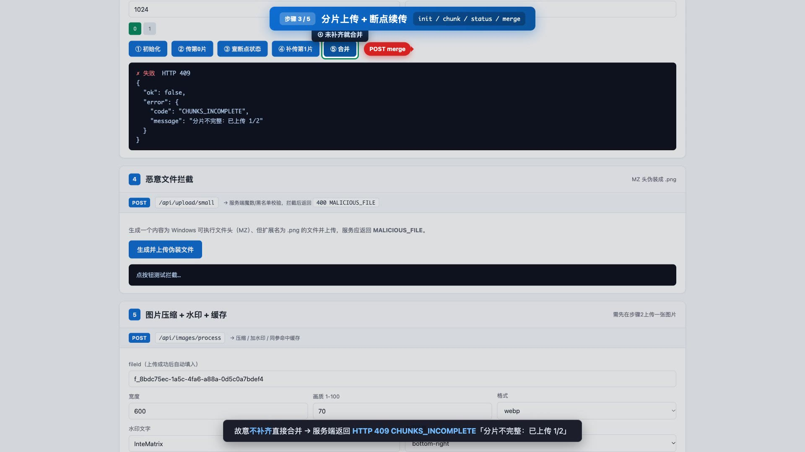
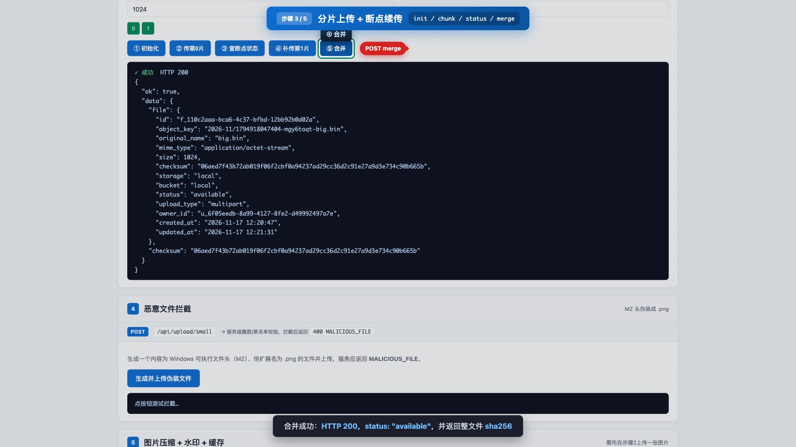
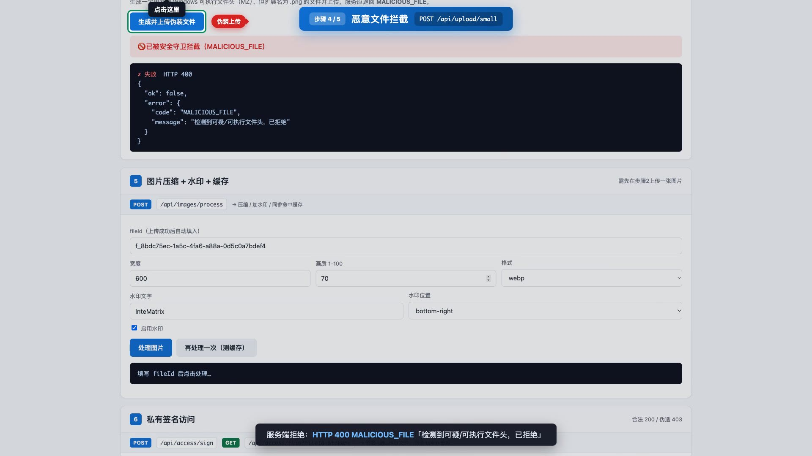
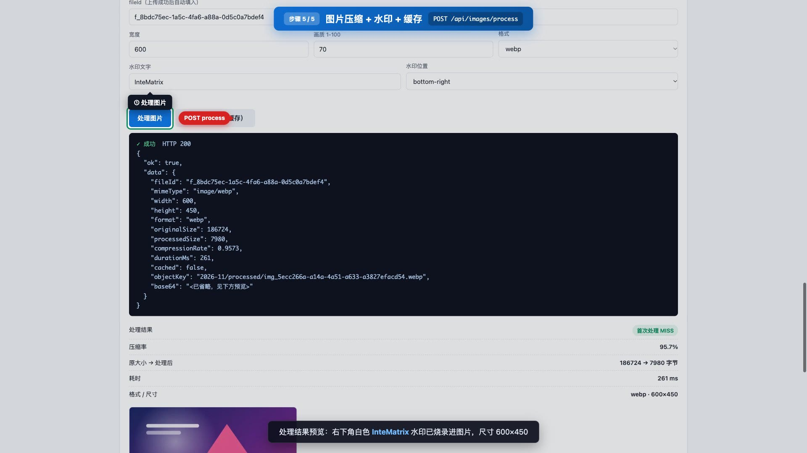
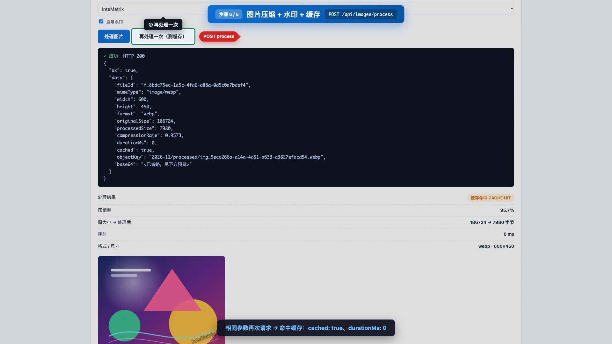
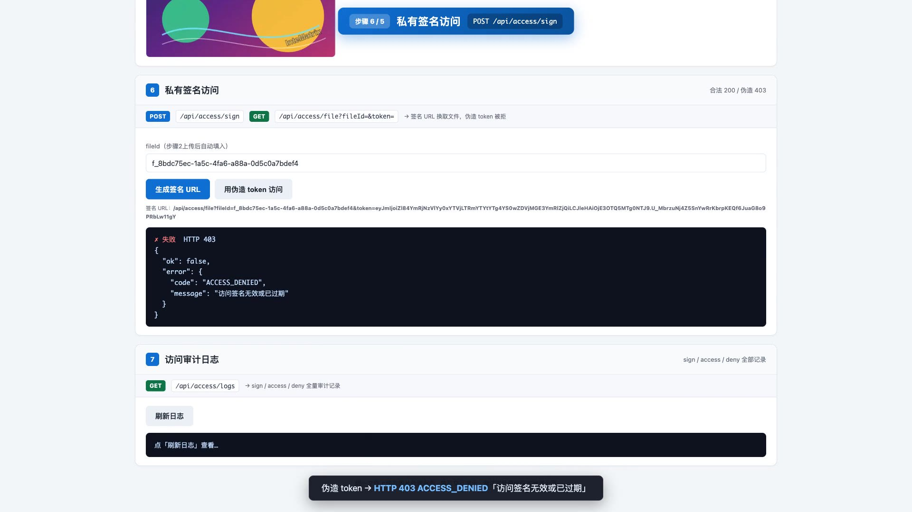
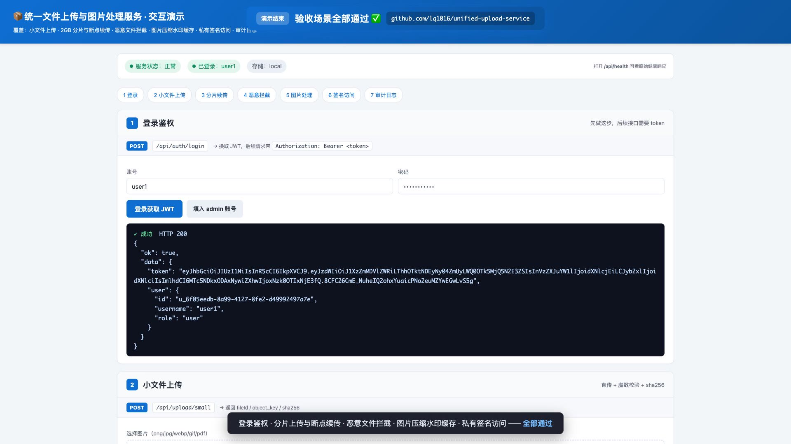
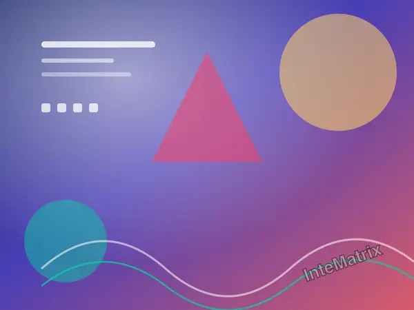

Node.js 22 + TypeScript + Express + SQLite（better-sqlite3）+ Sharp · 存储层 local / S3 可切换 · 密钥全部从环境变量读取
下面这段录屏即为投稿交付的 docs/demo.mp4（1920×1080，3 分 09 秒）。录制基于服务自带的单页交互界面 /demo，每一步都带步骤条、接口说明、聚光灯提示和解说字幕，JSON 响应在 1080p 下清晰可读。
视频源文件：media/demo.mp4（5.15 MB，H.264 / 30fps）· 仓库路径 docs/demo.mp4
POST /api/auth/login（user1 / Test@123456）拿到 JWT，后续请求带 Authorization: Bearer <token>，无 token 直接 401。init → 传第 0 片 → status 查断点（uploadedChunks:[0]）→ 未补齐就 merge 返回 409 CHUNKS_INCOMPLETE → 补传第 1 片 → merge 成功（status:"available" + sha256）。演示用 1KB/2 片，服务端配置上限 MAX_FILE_SIZE = 2GB、默认分片 5MB。.png 的文件，服务端魔数与危险文件头校验返回 400 MALICIOUS_FILE。POST /api/images/process，width=600 / quality=70 / format=webp / watermark=true / watermarkText=InteMatrix / watermarkPosition=bottom-right；相同参数再请求一次 cached=true、durationMs=0。POST /api/access/sign 拿签名 URL，合法签名访问 200，伪造 token 403 ACCESS_DENIED。







docs/watermarked-demo.webp —— 600×450 WebP，右下角白色 InteMatrix 水印（-20° 旋转，带描边）。

npm install && npm run seed && npm run build && npm start → http://localhost:3000
交互演示http://localhost:3000/demo（根路径 / 自动跳转）
测试账号 1user1 / Test@123456（普通用户）
测试账号 2admin / Admin@123456（管理员）
接口文档docs/openapi.yaml（OpenAPI 3.0）
安全规则docs/SECURITY.md（白名单、大小限制、恶意文件校验、签名访问逐条说明）
性能实测docs/PERFORMANCE.md（10MB 上传 P95 40ms、单图压缩 P95 63ms，要求分别为 3s / 500ms）
| # | 要求 | 本项目实现 |
|---|---|---|
| 1 | 接口 ≥ 7 个 + OpenAPI | 9+ 接口（直传凭证/小文件/分片/合并/删除/图片处理/签名/日志），docs/openapi.yaml |
| 2 | 数据表 ≥ 5 张 | 8 张：files、upload_chunks、upload_sessions、business_links、access_logs、blacklist、users、processed_images；建表脚本 src/db/schema.sql |
| 3 | 2GB 分片 + 断点续传 | MAX_FILE_SIZE=2GB，默认 5MB 分片，status 查询已传分片，合并校验完整性且幂等 |
| 4 | 安全规则 | 扩展名/MIME 白名单、2GB 上限、魔数与危险文件头校验、黑名单、私有桶短期签名访问，规则见 docs/SECURITY.md |
| 5 | 图片处理可配 + 缓存 | 压缩率/画质/格式可配，水印文字/位置/透明度可配，处理结果按「源文件 + 参数摘要」缓存 |
| 6 | 性能 + 覆盖率 | 10MB 上传 P95 40ms（要求 <3s），单图压缩 P95 63ms（要求 <500ms），覆盖率 91.9%（要求 ≥70%） |
| 7 | 源码 + 提交历史 | 完整 TypeScript 源码，可 npm run build 编译；含提交历史；密钥仅从环境变量读取，无硬编码 |
| 8 | README 可跑 | README 含对象存储（S3 / local）配置说明与干净机器启动步骤 |
| 9 | 测试环境 + 2 个账号 | 本地 npm start 即测试环境；user1 / admin 两个账号（npm run seed） |
| 10 | 3–5 步体验路径 + 3 分钟录屏 | 5 步清单 + 3 分 09 秒录屏，覆盖分片上传、断点续传、非法类型拦截、压缩与水印 |
| 11 | 2 轮修改 + 7 天缺陷修复 | CHANGELOG 记录 3 轮修改；验收通过后 7 天内响应修复 |